China Social Insurance for Foreign Employees (2026): What the Situation Looks Like on the Ground
Key takeaways
- China’s legal framework treats social insurance as a core labor compliance component, and foreign employees are generally included in practical administration.
- The biggest complexity is not the law text itself, but local implementation differences across cities, timelines, and documentary expectations.
- In 2026, employers should first understand the China reality (policy baseline + local practice), then design execution controls.
China situation snapshot: policy baseline vs practical administration
At the national framework level, social insurance in China is anchored in labor and social insurance legislation. In operational reality, however, employer experience is shaped heavily by city-level practice. This means two statements can both be true at once: the legal baseline is clear, and the actual process path can still vary in detail depending on location, filing channel, and document handling requirements.
For foreign employers, this matters because headquarters often expects one uniform answer. China social insurance administration does not always behave like a single centralized system from an operator’s perspective. The most common execution friction appears where legal intent, local administrative rhythm, and payroll cycle timing intersect.
What foreign employers should understand first about China’s current landscape
1) Inclusion logic is broad, but implementation mechanics are local
The broad compliance expectation is that employment in China links to social insurance obligations. Yet practical execution depends on local bureau process requirements, accepted document standards, and processing timelines. Employers with multi-city teams should expect procedural differences even where the legal principle is shared.
2) Treaty/exemption discussions are conditional, not automatic
In management conversations, treaty exemption is often treated as a binary switch. In practice, it behaves more like a conditional workflow: eligibility interpretation, certificate readiness, and local acceptance all matter. The same employee profile can produce different handling timelines if document completeness differs.
3) Timing risk is one of the most underestimated issues
Many teams focus on “whether” but under-manage “when.” Delays in onboarding records, contract uploads, or exemption documentation can force default treatment in payroll cycles. The result is usually not legal drama first—it is correction overhead, employee confusion, and avoidable internal escalation.
City-level variability: what changes in real operations
Across major China labor markets, differences usually appear in four areas:
- Documentation granularity expected at filing stages
- Turnaround timing for processing and confirmation
- Handling approach for edge-case foreign employee scenarios
- Practical communication expectations during corrections
This does not mean rules are arbitrary. It means employers should treat city operations as part of compliance design, not as a postscript.
Impact on employer decision-making
Cost and forecast impact
Even when contribution principles are known, real monthly outcomes can move if assumptions are loaded late or exceptions are processed in a later cycle. Finance teams should model timing variance, not only policy variance.
HR and employee experience impact
Employees usually evaluate payroll trust through consistency and clarity. If treatment changes are not explained early, HR support load rises quickly. In cross-border teams, bilingual expectation management is often the practical differentiator.
Governance impact
Leadership confidence depends on whether teams can explain why a treatment decision was made and prove how it was executed. This is why evidence architecture matters as much as calculation logic.
Practical interpretation framework (before jumping to “how to respond”)
Use this sequence:
- Legal baseline check: what principle applies nationally?
- Local practice check: how is this currently processed in the target city?
- Document readiness check: can we support the intended treatment now?
- Payroll timing check: can we complete this before run lock?
- Communication check: does employee-facing messaging reflect actual handling?
This framework helps teams avoid premature assumptions and keeps operations aligned with China reality.
Tables: China situation translated into decision signals
| Situation dimension | What is commonly observed | Decision signal for employers |
|---|---|---|
| Legal baseline | Broad inclusion expectation under labor/social insurance framework | Treat social insurance handling as default compliance path |
| Local administration | City-by-city procedural differences | Build location-aware SOP and parameter ownership |
| Exemption handling | Document and acceptance dependent | Manage as exception workflow, not default shortcut |
| Payroll timing | Cycle deadlines create practical constraints | Prioritize pre-run document completeness and simulation |
| Risk type | Typical trigger in China operations | Early warning indicator |
|---|---|---|
| Documentation risk | Missing or late supporting files | Exception queue growth before payroll lock |
| Interpretation risk | Ambiguous treatment assumptions | Repeated escalations between HR/payroll/compliance |
| Execution risk | Parameter misalignment across teams | Reconciliation deltas after payroll run |
| Communication risk | Late explanation to employees | Spike in deduction-related tickets |
What employers should do next (response layer)
Now that the China situation is clear, response should focus on operational certainty:
- Define city-specific parameter ownership and update cadence.
- Separate standard cases from exception cases with clear approval routes.
- Tie payroll finalization to required data-field completeness.
- Issue pre-payroll communication for affected employees.
- Archive treatment evidence in a retrievable monthly package.
FAQ
Is the challenge mainly legal interpretation?
Not usually. For most employers, the bigger challenge is execution consistency across locations and cycles.
Why do teams still struggle if legal principles are known?
Because document timing, local process behavior, and payroll deadlines can break otherwise correct assumptions.
What is the first improvement with highest ROI?
A city-aware pre-payroll control routine with explicit ownership and exception triage.
Disclaimer
Informational only; not legal advice.
Sources
- Social Insurance Law of the PRC (NPC): http://www.npc.gov.cn/zgrdw/englishnpc/Law/2009-02/20/content_1471106.htm
- Labor Contract Law of the PRC (NPC): http://www.npc.gov.cn/zgrdw/englishnpc/Law/2007-12/13/content_1384064.htm
- PwC Worldwide Tax Summaries (PRC): https://taxsummaries.pwc.com/peoples-republic-of-china/individual/other-taxes
Need local employment support in China?
If you need a compliance-first partner for hiring, payroll, and risk controls in China, China-Payroll.com can help evaluate the right setup.
Image Prompt Pack
Create a 16:9 hero image for article title: 'China Social Insurance for Foreign Employees (2026): What the Situation Looks Like on the Ground'. Scene: finance and payroll operations team reviewing contribution base dashboards in a modern office. Include motifs…